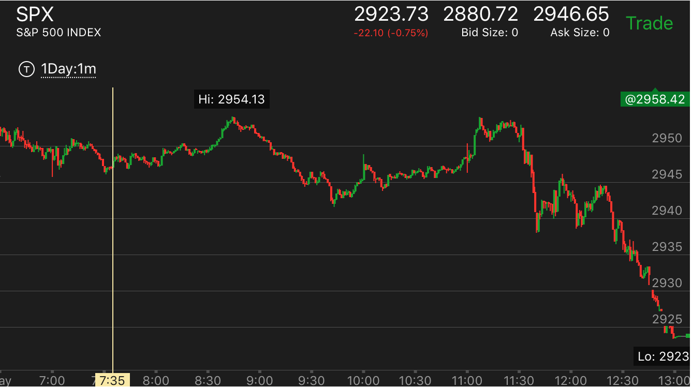

确定性的开盘建立趋势，然而先反向运动走势
- 开盘走低，在底部没有加速到底的走势，冲高，创新高。出现了两段走势反转后，走低创新低。做多也有一样的走势
- 这个走势的特点在于，跌势的时候，它跌的很深，这样它有足够的空间来上涨，而且形成一个足以反转的走势。上涨也有对称的效果
- 它在底部停留时间很短，这样就不是一个真实的底部。只是临时要反弹而已
- 如果下跌的时候，不是从最高点一下下来的，而是有一个转折，那么很可能转折的停在或者刚刚超过转折点。上涨也一样。
- 这个走势未必一定发生，它要看它反弹的形状。但是一旦符合上述条件，就要小心。下跌的时候，会跌破新低。上涨会涨破新高
- 它反弹的速度应该相对比较块，这样才有时间再次反转下来。上涨也一样。
开盘下跌出现两段下跌，没有加速，大涨创新高
真实的两段下跌，底部也没有加速，但是确实是底部
真实的两段下跌，底部也没有加速，但是确实是底部
TOP

图示：可以看到7：20和7：30的最低点没有加速走势。但是和开盘的跌势加起来，就成了一个两段下跌走势。
这个是真正的两段下跌。而且它占的面积很广。和那种会反转的两段走势不同。
开盘下跌出现两段下跌，没有加速，大涨创新高
TOP

图示：
1. 开盘形成了跌势。7：35出现相对论的跌势后，而且是两段跌势后，开始缓慢上涨。它创了新高。但是不代表就是升势。7：35的低点不是一个加速点。
2. 9：30创新低。然后反弹。11：00回到原位后，开始下跌。它在11：30创新低后，反弹，填补真空。加上填补真空的时间，它的下跌时间超过90分钟。
而8：40开始的跌势，跌倒低点用了60分钟。这个说明了，它仍然会继续下跌。

图示：开盘后，出现了两段下跌。但是它的第二段没有加速，就开始创新高。这时应该警惕它可能会涨的很厉害。
应该等它见顶后，做空。因为它的趋势仍然是下跌。

图示：
1. 开盘后快速下跌，拉回后，大跌。形成两段走势。它在底部反弹很小。说明要涨了。但是在底部没有加速。
说明没有到底真实底部。未来可能创新低。
2. 上涨后，因为速度比较慢。而且是从最高点一口气跌下来的。说明一定创新高。它创新高后。快速下跌。说明还会回到至少高点。
3. 8：00创新高。要注意，在8：00的新高点，也很缓慢。没有加速的样子。但是这个就是一个两段上涨走势结束了。说明在这种
情况下，不一定需要加速。而是只要连续上涨就够了。
4. 8：00开始下跌的时候，在高点附近徘徊了1个小时。说明要跌。考虑到前面没有到底。说明大盘一定会创新低的。